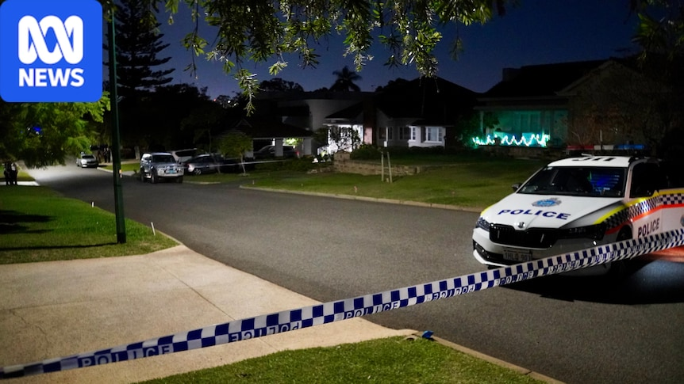
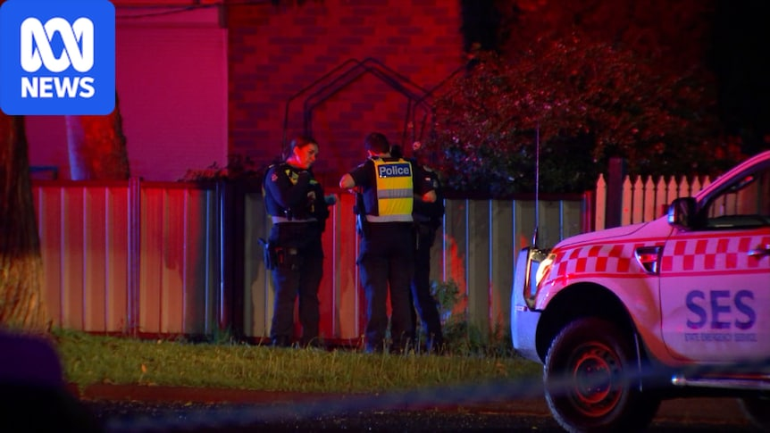

WANEYE RESEARCHAUSTRALIA EDITION
ASX MARKET BRIEF / 14 November 2026 · 11:08 AEST
Read the ASX
with context
Independent signal extraction from Australian reporting, market data and policy context.
48/ 100
MARKET PULSEMeasured confidence
Composite sentiment across today’s source set.
01
THE BRIEF
What matters now
14 November 2026
11:08 AEST
End of RBA rate hike cycle signals relief for borrowers but reflects rising macroeconomic and labor market strain.
Property market sharpens downward trend with accelerated monthly declines across Brisbane and Perth.
Consumer discretionary faces severe headwinds underscored by David Jones closing half its store footprint.
Rapid AUD depreciation and sustained coal demand provide defensive buffers for materials and energy exporters.
02
CROSS-SECTOR PULSE
An ASX cross-sector scan
Directional intelligence, distilled from the current reporting cycle.
01
Materials / Mining
Strong exploration discoveries in gold and critical minerals alongside resilient thermal and metallurgical coal demand.
6 cited sourcesOPEN SIGNAL ↗
02Financials / Banking
Margin pressure from peaked cash rates, accelerating housing price drops, and heightened regulatory compliance penalties.
6 cited sourcesOPEN SIGNAL ↗
03Consumer Discretionary & Retail
Severe structural contraction evidenced by department store closures and consumer down-trading to secondhand luxury.
4 cited sourcesOPEN SIGNAL ↗
04Technology
Sentiment rattled by major cloud outage disruption and global leadership upheaval following Jensen Huang's exit from Nvidia.
7 cited sourcesOPEN SIGNAL ↗
05Energy
Global crude price retreat drives domestic pump relief while gas reservation policies anchor domestic supply stability.
2 cited sourcesOPEN SIGNAL ↗
03
RISK REGISTER
Know the downside
Likelihood and impact are assessed independently from market sentiment.
Accelerating Residential Property Downturn
Underweight domestic mortgage-concentrated lenders; favor diversified financials with non-interest income streams.
- Impact
- High
- Likelihood
- High
- Evidence
- 3 cited sources
Rapid Currency Depreciation (AUD/USD Free Fall)
Increase portfolio weighting to US-dollar-denominated earnings and international commodity exporters.
- Impact
- High
- Likelihood
- Medium
- Evidence
- 1 cited sources
Enterprise Tech Infrastructure Vulnerability and AI Capex Fatigue
Trim high-multiple technology equities lacking near-term free cash flow generation.
- Impact
- Medium
- Likelihood
- Medium
- Evidence
- 4 cited sources
State Government Fiscal Stress and Credit Rating Downgrades
Maintain vigilance on semi-government bonds and infrastructure contractors vulnerable to state budget austerity.
- Impact
- Medium
- Likelihood
- High
- Evidence
- 2 cited sources
04
POSITIONING
Act on the signal
Overweight Major Commodity Exporters and Coal Producers
Persistent global coal demand combined with a slumping AUD expands margins and free cash flow yields.
BHP.AXRIO.AXWHC.AX
Opportunitiesmedium-term
Tactical Exposure to Gold and Critical Minerals Explorers
High-grade regional discoveries and new project floats offer idiosyncratic upside independent of domestic retail cycles.
NST.AXEVN.AX
Opportunitieslong-term
Underweight Discretionary Retail and Department Store Landlords
David Jones half-network closure and consumer belt-tightening increase tenant default and vacancy risks.
JBH.AXPMV.AXSCG.AX
Defensiveshort-term
Hedge Exposure to Major Mortgage Banks
Steepening home price declines in Perth and Brisbane and regulatory scrutiny pose headwinds to loan book expansion.
CBA.AXWBC.AXNAB.AXMQG.AX
Defensiveshort-term
05
FORWARD VIEW
The road ahead
1—3 MONTHS
Rangebound and cautious 1–3 month performance for the ASX 200 (^AXJO) as retail weakness and housing deterioration offset resource sector export strength.
6—12 MONTHS
A 6–12 month stabilization supported by the anticipated RBA easing cycle, though economic growth will be constrained by state fiscal consolidation and subdued consumer demand.
06
SOURCE INTELLIGENCE
Reporting behind the view
Selected Australian source headlines referenced by the analysis.
ABC News · 2026-11-14 00:52:34 UTC
Questions left to answer in wake of Huang's departure
VIEW STORY ↗ABC News · 2026-11-14 00:46:04 UTC
Australia wins six Youth Olympics medals as African Games hailed
VIEW STORY ↗ABC News · 2026-11-14 00:28:33 UTC
Regional bands say it's now cheaper to do a gig in London than interstate
VIEW STORY ↗ABC News · 2026-11-14 00:13:11 UTC
Rope barriers at parliament round out prickly week for government
VIEW STORY ↗
ABC News · 2026-11-14 00:05:46 UTC
Litany of missed opportunities in Floreat murder tragedy
VIEW STORY ↗
ABC News · 2026-11-13 23:52:23 UTC
Man dies after house fire in Geelong suburb
VIEW STORY ↗CURRENT RESEARCH
Three regions. Three connected views
Move from the executive brief through sector signals, risks, positioning and supporting reporting.
03Current regional reports
03Market editions
HourlyAnalysis cadence